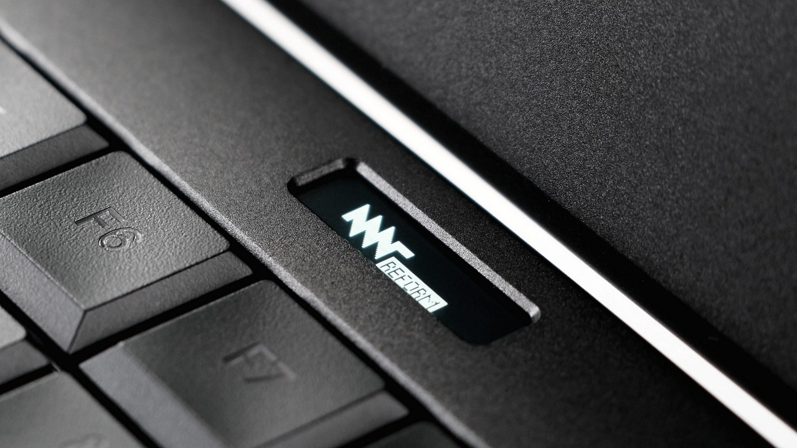

The Reform laptop is designed to be as open and transparent as possible.
The Reform laptop is designed to stay with you for a long time. From open-hardware input devices to user-swappable 18650 battery cells, it is designed to be the most repairable and best documented portable computer.
Its components have been selected explicitly to strike a good balance between open source and usability.